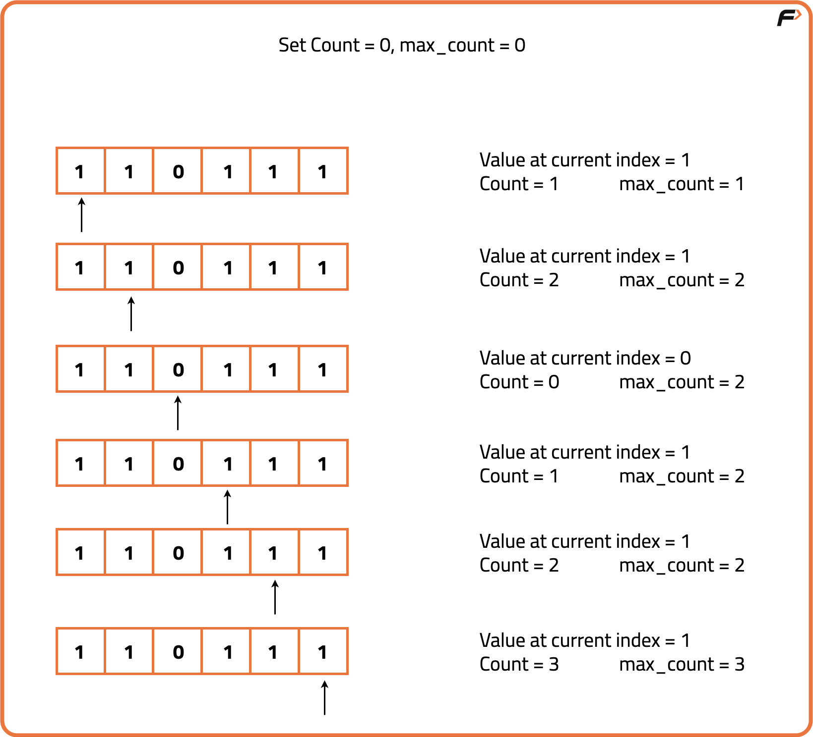

Count Maximum Consecutive One's in the array
Problem Statement: Given an array that contains only 1 and 0 return the count of maximum consecutive ones in the array..
Examples
Example 1:
Input: prices = {1, 1, 0, 1, 1, 1}
Output: 3
Explanation: There are two consecutive 1’s and three consecutive 1’s in the array out of which maximum is 3.
Example 2:
Input: prices = {1, 0, 1, 1, 0, 1}
Output: 2
Explanation: There are two consecutive 1's in the array.
Disclaimer: Here is the practice link to help you assess your knowledge better. It's highly recommend trying to solve it before looking at the solution.
Approach
Algorithm
We need to find the longest streak of consecutive 1’s in a binary array. A simple idea is to traverse the array while maintaining a counter. Every time we encounter a 1, we increase the counter. If we encounter a 0, the streak breaks, so we reset the counter to 0. At each step, we track the maximum streak length seen so far.
- Initialize two variables:
cnt→ counts the current streak of 1’s.maxi→ stores the maximum streak found so far.
- Traverse through the array:
- If
nums[i] == 1, incrementcnt. - If
nums[i] == 0, resetcntto 0. - Update
maxi = max(maxi, cnt)at each step.
- If
- Finally, return
maxi, which contains the length of the longest consecutive 1’s.

Code
#include <bits/stdc++.h>
using namespace std;
class Solution {
public:
// Function to find maximum consecutive 1's in an array
int findMaxConsecutiveOnes(vector<int> &nums) {
// Variable to store current count of consecutive 1's
int cnt = 0;
// Variable to store maximum consecutive 1's
int maxi = 0;
// Traverse the array
for (int i = 0; i < nums.size(); i++) {
// If current element is 1, increment count
if (nums[i] == 1) {
cnt++;
} else {
// If element is 0, reset count
cnt = 0;
}
// Update maximum if current count is greater
maxi = max(maxi, cnt);
}
// Return maximum consecutive 1's
return maxi;
}
};
int main() {
// Input array
vector<int> nums = {1, 1, 0, 1, 1, 1};
// Create Solution object
Solution obj;
// Get answer
int ans = obj.findMaxConsecutiveOnes(nums);
// Print result
cout << "The maximum consecutive 1's are " << ans;
return 0;
}
Complexity Analysis
Time Complexity: O(N), since we scan the array once.
Space Complexity: O(1), as only constant extra variables are used.